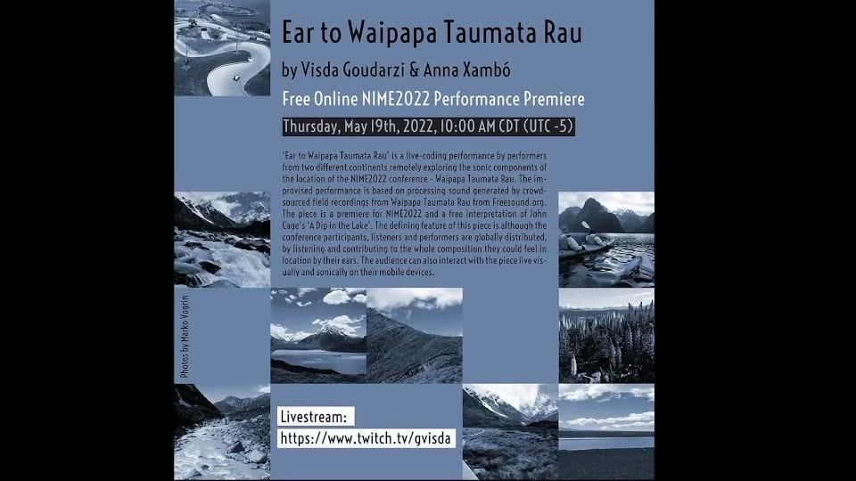

Ear to Waipapa Taumata Rau
License: Creative Commons Attribution 4.0 International License (CC-BY 4.0)
Project Description
Ear to Waipapa Taumata Rau’ is a live-coding performance by performers from two different continents remotely exploring the sonic components of Waipapa Taumata Rau. Our improvised performance would last 15-20 minutes, would feature field recordings collected by the participants of the conference in location, and would make use of multiple live coding platforms. The duo has been developing various strategies for online and hybrid performances which adapt to the uncertain circumstances during and post-pandemic to encourage participation and interaction with a global and inclusive audience. The prompts asked the participants in conference location, to explore their surroundings through soundwalks inspired by John Cage’s "A Dip in the Lake". They are supposed to collect 1-2 minute field recordings from their sound walks and upload the recordings on Freesound using hashtags including NIME2022 and their location (e.g.#NIME2022, #WaipapaTaumataRau). The live-coding performance organizes all these recordings and crowdsourced sounds of the geographical area of the conference, incorporates them into a live processed and synthesized composition. The defining feature of this piece is although the conference participants, listeners and performers are globally distributed, by listening and contributing to the whole composition they can feel in location by their ears. One of the authors has created an online platform that interacts with the audience visually and sonically on their mobile devices.
Type of submission
“NIMEs with a story”.
Program Notes
"Ear to Waipapa Taumata Rau" is a remote live coding performance for two laptop performers distributed in two different continents exploring the sonic components of Waipapa Taumata Rau. The performance is based on processing sound generated by crowdsourced and personal site-specific field recordings from the conference location featuring field recordings collected by the conference participants and uploaded on Freesound. The piece is a real-time improvisation and a free interpretation of John Cage’s ‘A Dip in the Lake’.
Media

▶Full-length version: https://youtu.be/vH0e4ff5lOY
Ethics Statement
Our institutions are aware of this research, which has been ethically approved by De Montfort University (DMU)’s Research Ethics Committee (CEM ID C451429) following DMU's Research Ethics Code of Practice. This study is practice-based research that is low-risk and did not involve human participants at this stage.
Acknowledgements
The authors would like to thank the participants for contributing field recordings and the organizers of the sound walks.